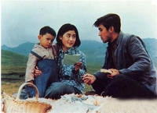
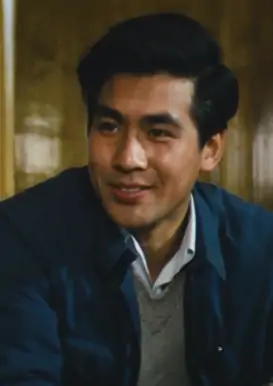
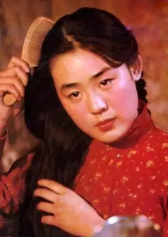
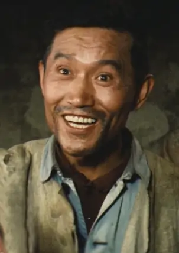
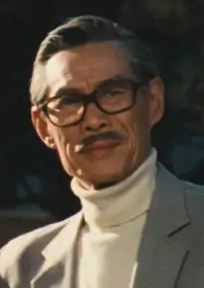

电影介绍 — 牧马人
基本信息
《牧马人》是上海电影制片厂拍摄、谢晋执导的剧情片，由朱时茂、丛珊领衔主演，于1982年上映。 该片改编自张贤亮的小说《灵与肉》，讲述了许灵均被打成“右派”，来到西北牧场劳动， 得到当地牧民的关怀照料，并与农村姑娘李秀芝结成连理，文革结束后，他放弃了到美国生活的机会，决定留下来建设祖国
剧情介绍
1980年，旅居美国的华侨企业家许景由在女秘书宋蕉英的陪同下回国旅游，并寻找失散多年的儿子许灵均。经过中国旅行社的帮助，许灵均从西北的敕勒川牧场赶到北京饭店，同父亲许景由见面了
当年，由于封建婚姻，许景由与妻子一直不和，后来丢下妻儿离家出走。在许景由走后的第四天，许灵均的母亲就病故了。从此，他孤苦伶仃地生活在这个世界上。30年过去了，许景由为没尽父责，深感内疚，他决心把儿子带回美国，继承遗产。这时，许灵均想起了贤惠能干的妻子秀芝和活泼可爱的儿子清清。他们一家人是那么的亲热、和睦，他不忍能离开妻儿去国外。夜晚，许景由向儿子倾吐思念之情，许灵均也向父亲倾诉自己的坎坷经历：
1957年，许灵均被打成“右派”，来到西北牧场劳动。那时，他感到孤独、绝望，曾想结束自己的生命。可是，他还是活下来了。是大自然纯净了他的思想，是劳动陶冶了他的感情，是质朴、善良的牧区人民温暖了他的心。他一辈子也不会忘记在牧场的那些岁月。他解除劳教后，因无家可归，被留在牧场放牧。老牧民董大爷给他钉上门帘子挡冷风；董大娘送来了热腾腾的面条。十年动乱中，郭𠷨子等牧民想方设法保护他免遭横祸。在他们之中，他找到了父亲和母亲，找到了温暖和希望，找到了勇气和力量。
“文革”中，从四川逃荒到敕勒川牧场的农村姑娘李秀芝举目无亲，无处安身。善良的郭𠷨子将她带到许灵均的小破屋里。秀芝不嫌许灵均是“右派”，许灵均感激秀芝对他的信任。在牧民们的赞助下，他俩结成了患难夫妻。婚后，秀芝把他破旧的小屋收拾得焕然一新，并养起了鸡、鸭、鸽，成了“海陆空”司令。不久后，他们有了儿子清清，这个幸福的家庭又增添了新的欢乐。粉碎“四人帮”后，许灵均错划的“右派”得到改正，他重新走上讲台，把知识奉献给牧场的后代。
“天苍苍，野茫茫，风吹草低见牛羊。”这首民歌在祁连山麓回响，也在身处北京饭店的许灵均的心中回响。他又想起离别的前夜，妻子的无限信赖和深刻理解，使他激动万分。他不能离开祖国，这里有他的亲情、他的爱、他的根。
许景由不再勉强儿子跟他走了，他嘱托儿子在大陆为他买块墓地，死后他想葬在祖国。送走了父亲，许灵均又踏上了他用汗水浸过的土地，又回到患难与共的亲友中间，回到了相濡以沫的妻子身边。
角色介绍
许灵均
演员 朱时茂

李秀芝
演员 丛珊

郭𠷨子
演员 牛犇

许景由
演员 刘琼
获奖记录
| 获奖时间 | 获奖赛程 | 获奖奖项 | 获奖方 | 备注 |
|---|---|---|---|---|
| 1983年 | 第三届中国电影金鸡奖 | 最佳男配角 | 牛犇 | 获奖 |
| 最佳女主角 | 丛珊 | 获奖 | ||
| 最佳剪辑 | 周鼎文 | 获奖 | ||
| 第六届大众电影百花奖 | 最佳故事片 | 《牧马人》 | 获奖 | |
| 最佳男配角 | 牛犇 | 获奖 | ||
| 1982年中国文化部优秀影片奖 | 《牧马人》 | 获奖 | ||